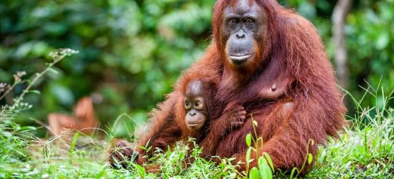

Orang-utans
Auf dieser Website erfährst du spannende Informationen zu den Orang-utans.
Steckbrief
Grösse, Gewicht und Fortpflanzung
Grösse: 1,15 bis 1,5 Meter vom Kopf bis zum Rumpf.
Gewicht: Männchen 50–90 kg, Weibchen 30–50 kg; in Gefangenschaft können Männchen bis 200 kg erreichen.
Fortpflanzung: Weibchen versorgen ihre Jungen bis zu 10 Jahre lang
Lebensraum

Tropische Regenwälder, oft in der Nähe von Sümpfen und Flüssen, bis 1500 Meter Höhe
Nahrungssuche
Orang-Utans sind Einzelgänger und suchen ihre Nahrung meist auf Bäumen. Sie sind sehr gut darin, Äste zu klettern und Nahrung zu erreichen.

Nahrung
Orang-utans ernähren sich hauptsächlich von Früchte, Blätter, Rinde, Insekten und gelegentlich kleine Tiere
Bildergalerie